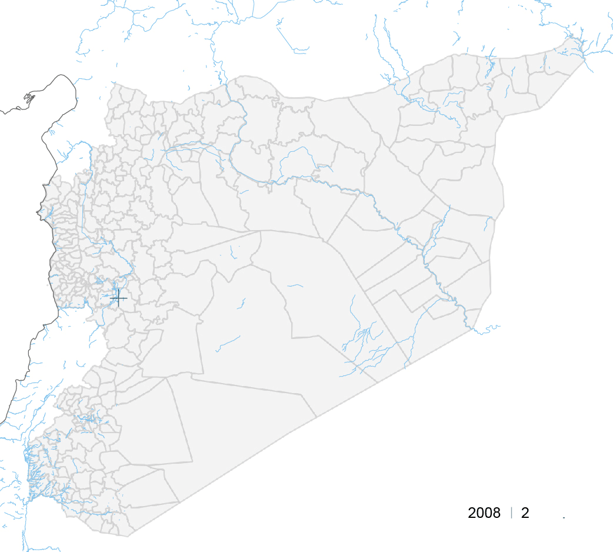
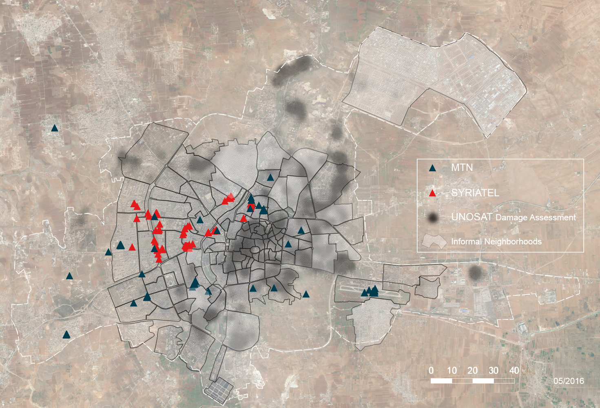
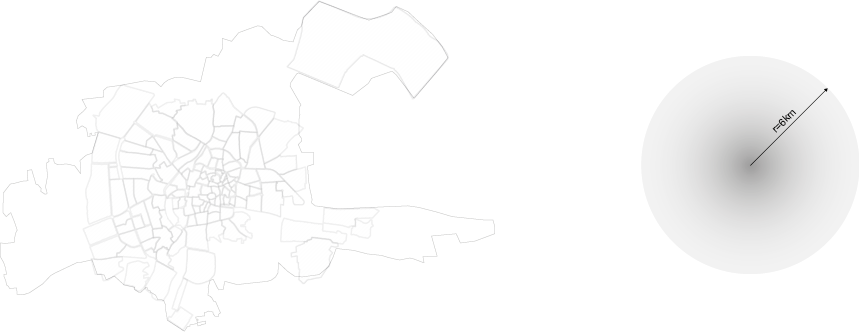
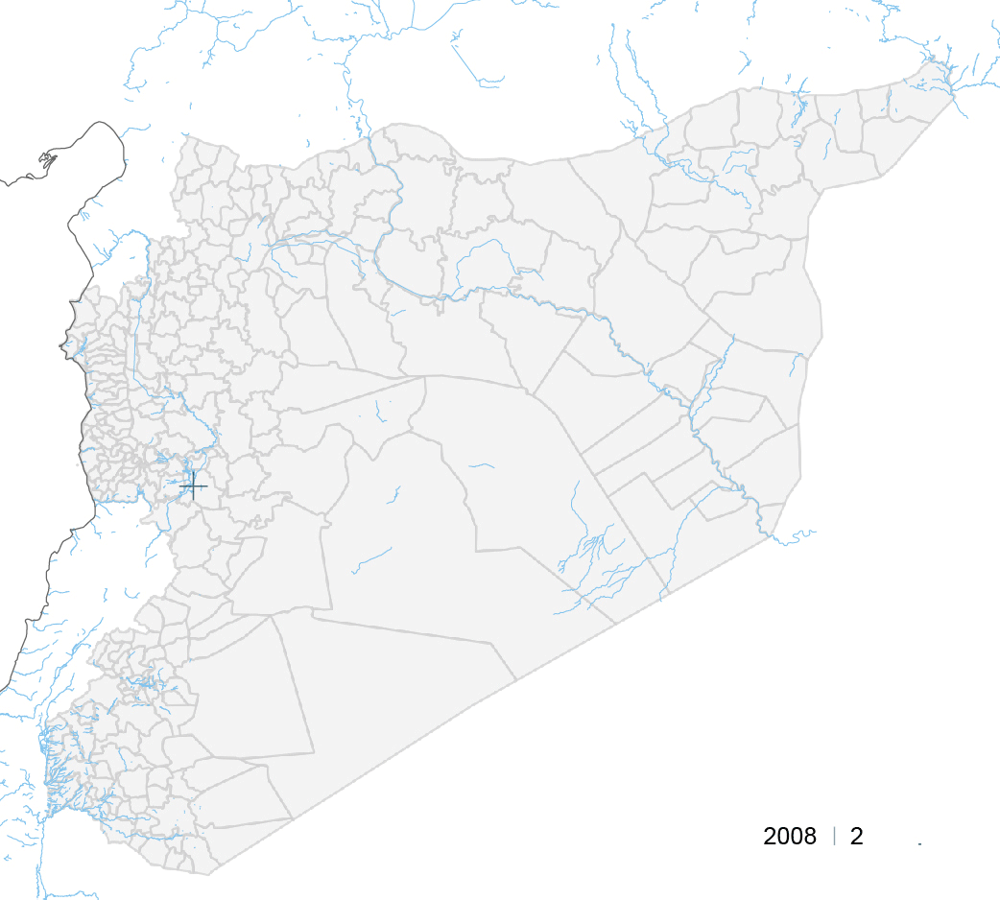
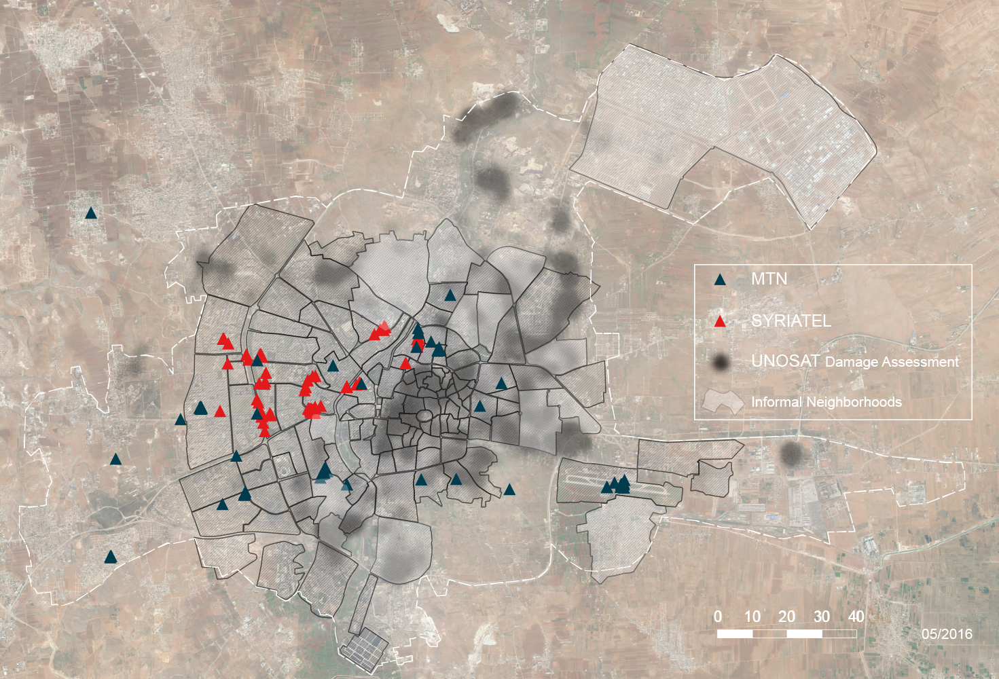
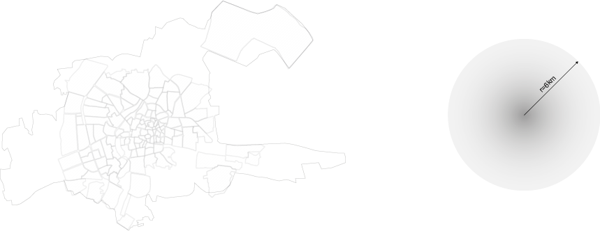

Communications Infrastructure
Syria's telecommunication network plays a key role in the ongoing conflict, as essential communication and citizen journalism would not be possible without access to the Internet - particularly via mobile phone. Power outages, destroyed infrastructure and deliberate shutdowns have disconnected around two thirds of the country from Syrian Internet providers. In the context of this destruction, Internet access has become decentralized and Syrian's make use of microwave links from Turkish cities or satellite connections.
1
Typically, telecommunication infrastructure is implemented and administered by a government entity or public company. In Syria, the government-owned Syrian Telecom Establishment (STE) exclusively provides infrastructure for all kinds of telecommunication.2
Syria's mobile telecommunication market is split between two companies, MTN and Syriatel, the latter run by Rami Makhlouf, arguably the most powerful economic figure in Syria and a first cousin of Bashar al-Assad.3
As Keller Easterling points out, “contemporary infrastructure space is the secret weapon of the most powerful people in the world precisely because it orchestrates activities that can remain unstated but are nevertheless consequential.” She continues to argue, “some of the most radical changes in the globalizing world are being written, not in the language of diplomacy, but in these spatial, infrastructural technologies.”4
Accordingly, mapping mobile phone infrastructure is mapping zones of control.Mapping Communication Infrastructure
Due to the fact that cellular tranceiver station towers are hard to recognize when analyzing satellite imagery, we used a different kind of remote surveying. Berlin based Open Cell ID
5
is a web platform that provides crowd-sourced data on the positions of GSM base transeiver stations - also referred to as cells - free of charge. The dataset returns the mobile country code (MCC), a specific number for each provider, latitude, longitude as well as the date when the cell was first detected by a user. At the time of writing this text, over 6500 stations are mapped all over Syria.One essential feature of cell phone communication is that the phone must be localized within the network. As soon as the device is within the range of three cells, its position can be pinpointed. Thus the user is always within a controlled space. The project utilises a cell phone app which performs this localization in reverse, and saves and distributes the information collected when logging into a new cell. In addition, it is important to stress that all points listed in the most recent data set are active and operational cells.


Radio feature, published by NPR (2016) Transcript of the interview is accessible.

This animation shows the rise in cells detected by users of the app from 2008 to 2016:

Obviously, there were more than 2 operational cellphone towers in Syria in 2008, so it is important to address the limitations of the data set. Firstly, as mentioned earlier, the data is only gathered by users who have an application installed on their phone and who run the app, allowing it to upload data, so, the rise in detected cells does not necessarily mean that more cells were built. It might as well stem from more local or even from foreign users who entered the country and who ran the application. Secondly, due to the nature of locating the closest cell even while moving, some of the readings are not precise and therefore there are frequent overlays of captured data. In other words, the same station may be captured multiple times with minor variations or even round-off errors in latitude and longitude:
Zooming in on Aleppo, a clear pattern emerges: Syriatel operates almost exclusively in neighborhoods that are government controlled, whereas MTN covers the rebel held areas of the city:

Moreover, it is evident that cellphone infrastructure only exists in the formal neighborhoods of Aleppo. Again, there are many possible explanations for that: One explanation could be that in the regime controlled areas of Aleppo more people have Syriatel contracts,
6
or that no MTN SIM cards are sold, and therefore only the Syriatel tranceiver stations are picked up. Another obvious fact is that cellphone infrastructure is not being rebuilt during conflict. The map shows that, when displaying UNOSAT data on urban damage, no cellphone towers were recently detected in neighborhoods most severely affected by airstrikes, bombings and shelling.Alternative Means of Communication: Broadcasting
With both media as well as telecommunications highly controlled, new forms of alternative media have emerged in Syria. As seen in previous conflict zones,
7
radio, in times of conflict, becomes the main mass medium, since TV broadcasting infrastructure is inoperative in large parts of the country. Needless to say, there are significant differences between broadcasting and telecommunication, since broadcasting is in principle one-sided as opposed to peer-to-peer networked telecommunication. However, due to the fact that radio does not depend on a wide array of cell towers and – even more importantly – considering the fact that radio is actually wireless as opposed to so-called wireless communication where only the last segment of the system is actually wireless, it has become an essential form of communication. Small, wireless and even battery powered devices are sufficient to receive radio signal. Furthermore, the receiver or user cannot be located.Radio feature, published by NPR (2016) Transcript of the interview is accessible.
Although it took a while to establish them, given that the broadcasting studio depends on more stable working conditions, technical staff as well as specific equipment, as Omar Alassad asserts,
8
there are now multiple radio stations broadcasting for the Syrian people.9
Many of these radio stations, such as Al-Kul or Hara, don't operate out of Syria but have set up their studios just over the border in Turkey or even as far as France. The signal is transferred via satellite and then multiplied via small, mobile pocket transmitters that convert the signal and pass it on within Syria. One of the heavily publicized projects is called Pocket FM. It was developed by an NGO called MiCT – Media in Cooperation and Transition – which has been active in Syria since 2013.In a statement about the importance of local radio, the NGO emphasizes that radio reception is mobile and receivers are relatively affordable, thus making it a source of information that can in principle be listened to everywhere, and a means of communication that has the potential to become a platform for public dialogue and the development of a sense of citizenship. Oftentimes, radio is received collectively, in groups or listening clubs, so that there is always a possibility of stimulating a debate.
10
The small pocket transmitter can be either solar powered, plugged into a normal power outlet or even a car battery and fits a backpack, so that it can be transported very easily. Its antenna provides a range of about 6km, which means that the whole city of Aleppo could be covered by only one unit.
In summary, based on the crowd sourced data set, it is not possible to definitely claim that telecommunication infrastructure was targeted specifically. At the same time, it is impossible to rule that out. It can be argued, regardless, that the control mechanisms that were in place before most of the destruction happened had a much bigger influence on blocking access to telecommunication infrastructure for particular groups.
Produced by Joachim Hackl, for the Conflict Urbanism: Aleppo seminar at Columbia University during Spring 2016. See all student work here.